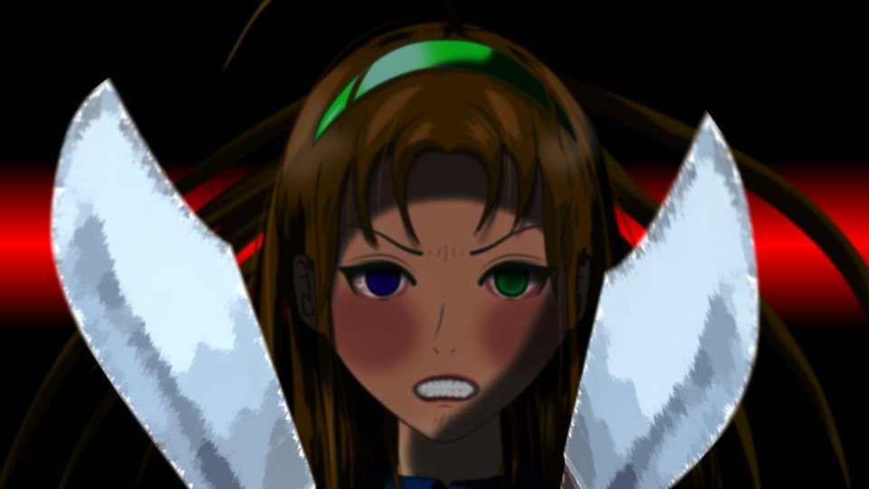

屈辱

古郡先輩は2階の部屋で両親に電話をしている。
新村先輩は集会場で明日の葬儀の準備。
私は、ここでただ座っているだけ。
縁側で足をぶらぶらさせているだけ。
新村先輩は集会場で明日の葬儀の準備。
私は、ここでただ座っているだけ。
縁側で足をぶらぶらさせているだけ。

ずいぶんと背の低くなった新村本家の桜。
低くなったのは、木そのものが地下に落ちてしまったから。
この木の根で、ドローガが作られていた。
低くなったのは、木そのものが地下に落ちてしまったから。
この木の根で、ドローガが作られていた。
この荒田桜って……何なのだろう。
薬物を精製することのできる植物は無数に存在する。
アヘンの原料、ケシの実。
マリファナの原料、大麻。
そして、エフェドリンやメタンフェタミンの原料となる桜。
いや、桜にエフェドリンが含まれているというのは俗説に過ぎない。
薬物を精製することのできる植物は無数に存在する。
アヘンの原料、ケシの実。
マリファナの原料、大麻。
そして、エフェドリンやメタンフェタミンの原料となる桜。
いや、桜にエフェドリンが含まれているというのは俗説に過ぎない。
しかし、火のないところに煙は立たない。
どうしてそんな俗説が生まれたのか。
今や、まことしやかにそれが事実であるかのように蔓延しているのだ。
私はそんなものには騙されない。
私は……騙されない。
どうしてそんな俗説が生まれたのか。
今や、まことしやかにそれが事実であるかのように蔓延しているのだ。
私はそんなものには騙されない。
私は……騙されない。
真相はもう、目の前にあるのだ。
もう、目の前にあるのだ。
難しく考える必要はない。
灯台の下に真相があっただけ。
もう、目の前にあるのだ。
難しく考える必要はない。
灯台の下に真相があっただけ。
「ん……五島ちゃん？」

縁側に現れたのは、チガ姉だった。
「どうしたんですか？」
「ん……マッチ忘れちゃってね」
「どうしたんですか？」
「ん……マッチ忘れちゃってね」
「…………」
私はそのままチガ姉を凝視する。
私はそのままチガ姉を凝視する。

「ん……どこだったかしら……」
チガ姉はタンスや小物入れをあさっている。
チガ姉の探し物は小さいものだが、私の探し物はそうではない。
目に見えない、あまりにも大きい物。
それが――目の前にある。
だから私はそれを凝視し続ける。
チガ姉はタンスや小物入れをあさっている。
チガ姉の探し物は小さいものだが、私の探し物はそうではない。
目に見えない、あまりにも大きい物。
それが――目の前にある。
だから私はそれを凝視し続ける。
「ん……私、五島ちゃんに何か悪いこと、したかしら？」
「…………」
「ん……ずっと五島ちゃんに睨まれている気がして……。 今も私のこと見ていたわよね？」
「それは、考えていることが露骨に出ているだけです」
「ん……どういうことかしら？」
「…………」
「ん……ずっと五島ちゃんに睨まれている気がして……。 今も私のこと見ていたわよね？」
「それは、考えていることが露骨に出ているだけです」
「ん……どういうことかしら？」
「目の前の真相を、見逃すわけにはいきません」
「ん……五島ちゃん、何を言っているの？」
「ここには2人だけ。 とぼける意味はないですよね？」
「ん……マッチ見当たらないわね。2階かしら」
「ん……五島ちゃん、何を言っているの？」
「ここには2人だけ。 とぼける意味はないですよね？」
「ん……マッチ見当たらないわね。2階かしら」
「呪殺の犯人の目的。
それは、疑いの目を逸らすことです」
「…………」
「…………」
「幸太郎さんはサクラさんを殺した犯人だと疑われ続けた。
だったら、疑う人がいなくなればいい。
そしたら、幸太郎さんという家族を失うことはない。
幸太郎さんが真犯人なのかはどうでもいい。
幸太郎さんが犯人扱いされ、いなくなってしまうことが耐えられなかった」

「ん……五島ちゃん、一体何を――」
「サクラさんの首を切った人物はまだ分かりません。 しかしその後の呪殺事件が起きたのは、幸太郎さんから疑いの目を逸らすために」
「サクラさんの首を切った人物はまだ分かりません。 しかしその後の呪殺事件が起きたのは、幸太郎さんから疑いの目を逸らすために」
「ん……人を殺してでもお父さんを守りたい人がいたってことね」
「卓越した運動神経があれば、殺すことも可能だったはず」
「ん……私、もう行くわね」
「卓越した運動神経があれば、殺すことも可能だったはず」
「ん……私、もう行くわね」
「チガ姉！ あなたしかいないんです！」


私の首元に、冷たい感覚。
私の首元に、冷たい刃物の感覚。
同時に、私の思考も冷たい。
恐れもない、焦りもない。
ただ、目の前の真相を睨むだけ。
私の首元に、冷たい刃物の感覚。
同時に、私の思考も冷たい。
恐れもない、焦りもない。
ただ、目の前の真相を睨むだけ。
「これは自白と考えていいんですよね？」
「黙って……」
「私は、チガ姉が私利私欲のためだけにやったとは考えていません」
「黙って……」
「私は、チガ姉が私利私欲のためだけにやったとは考えていません」
「黙りなさい！
でないと……！」
「でないと？」
「その首を……」
「この首を？」
「でないと？」
「その首を……」
「この首を？」
「五島ちゃん……分かってちょうだい。
お父さんや夏菜をこれ以上悲しませるわけにはいかないの」
「なるほど、真相を知れば不幸になる人が出てくる。納得です」
「…………」
「なるほど、真相を知れば不幸になる人が出てくる。納得です」
「…………」
「幸太郎さんを犯人と決めた人がいた。
幸太郎さんが捕まれば、また家族を失ってしまう」
「分かってるなら……もう、やめて……」
「分かってるなら……もう、やめて……」
「集会場で幸太郎さんを見張ることになった。
そんな中でチガ姉が誰か殺せば、幸太郎さんへの疑いが晴れる」
「いちいち言わないで……」
「いちいち言わないで……」
「疑いが晴れるまで、毎年殺し続けた」
「やめてって言ってるでしょ……！」
「やめてって言ってるでしょ……！」
「しかし、毎年起こる呪殺事件により、住人たちは互いに不信を抱くようになった。
チガ姉が東京へ行き、何もしなくても呪殺が発生するようになってしまった」
「黙って！」
チガ姉はさらにナイフを私の首に押し付ける。
「黙って！」
チガ姉はさらにナイフを私の首に押し付ける。
「彼らの中の誰かが呪殺事件を起こし、そしてこの前は私たちを殺そうとした。
チガ姉は、幸太郎さんが私たちを殺すことも計算に入れていたんですか？」
「違う！」
「違う！」
「もう呪殺事件を終わりにしないと、今度はチガ姉が疑われかねない。
だから今度は自分の身を守るために、幸太郎さんを捕まえる必要があった。
そのために私たちをここへ――」
「違う！」
「違う！」
「チガ姉は何もできません。
私に手を出せば、チガ姉も逮捕される。
そしたら夏菜ちゃんはどうなるか。
ひとりぼっちになってしまう」
「お願いだから、黙って……！」
「お願いだから、黙って……！」
「じゃあ、サクラさんを殺したのは誰なんですか？」
「え？」
「え？」
「幸太郎さんが疑われてからの犯人はチガ姉でもつじつまは合います。
じゃあ、サクラさんを殺した――
いえ、自殺だったしても、その首を切ったのは誰ですか？」
「そんなの……私だって知りたい……！ 知っていたら、お父さんの疑いなんて晴らせたのに……！」
「そんなの……私だって知りたい……！ 知っていたら、お父さんの疑いなんて晴らせたのに……！」
「…………」
「…………」
しばらく私とチガ姉は、にらみ合いを続ける。
「…………」
しばらく私とチガ姉は、にらみ合いを続ける。
「私は……
お父さんが犯人だなんて、今でも思っていない……！
だって……！」
「だって？ 何ですか？」
「だって？ 何ですか？」

チガ姉はさらにもう1本のナイフを、私の首に当てる。
その青と緑の眼球をむき出し、私を睨みつける。
その青と緑の眼球をむき出し、私を睨みつける。
これはチガ姉に殺意がない明らかな証拠。
殺すのなら、ナイフ1本で十分だし、1秒でその作業は終わる。
もう1本出したのは、威圧が足りないと考えたに過ぎない。
チガ姉は私を殺したいのではなく、黙らせたいのだ。
殺すのなら、ナイフ1本で十分だし、1秒でその作業は終わる。
もう1本出したのは、威圧が足りないと考えたに過ぎない。
チガ姉は私を殺したいのではなく、黙らせたいのだ。
チガ姉が私を殺せば、家族は完全に崩壊する。
夏菜ちゃんをひとりぼっちにしてしまう。
チガ姉には殺せない。
このにらみ合いは、ただの茶番だ。
夏菜ちゃんをひとりぼっちにしてしまう。
チガ姉には殺せない。
このにらみ合いは、ただの茶番だ。
――私の意図に気がついたのか、チガ姉はナイフを収めた。

「チガ姉、どうやって呪殺を起こしたんですか？」
「そんなの、ナイフを使えばどうとでもなるわ……」
「誰にもばれなかったなんて、手際がよかったんですね。 仲間がいたんですか？」
「仲間なんていないわ……」
「本当ですか？」
「本当よ……。むしろ私1人の方がやりやすい」
「そんなの、ナイフを使えばどうとでもなるわ……」
「誰にもばれなかったなんて、手際がよかったんですね。 仲間がいたんですか？」
「仲間なんていないわ……」
「本当ですか？」
「本当よ……。むしろ私1人の方がやりやすい」
しかし……それにしたって、あまりにも都合が良すぎる。
チガ姉が東京に行ってからは、住人同士が殺し合う。
そんな都合よく、毎年起こるものなの？
あまりにも出来過ぎている。
チガ姉が東京に行ってからは、住人同士が殺し合う。
そんな都合よく、毎年起こるものなの？
あまりにも出来過ぎている。
「チガ姉は何か大事なことを隠していますよね？」

「大事なこと……？」
「チガ姉にしか分からないことがあるはずです。 教えてください、何を隠しているんですか？」
「………… 何も……」
「チガ姉にしか分からないことがあるはずです。 教えてください、何を隠しているんですか？」
「………… 何も……」
「嘘だ！
吐け！
隠すんじゃない！」
私の大声に押されるかのように、チガ姉は両手と膝をついた。
と、全身が震え出し、今まで聞いたことのないような聞き苦しい嗚咽が響く。
まるで子供のように、チガ姉の下品で無邪気な嗚咽が、不快な波長で鼓膜を震わせる。
と、全身が震え出し、今まで聞いたことのないような聞き苦しい嗚咽が響く。
まるで子供のように、チガ姉の下品で無邪気な嗚咽が、不快な波長で鼓膜を震わせる。
「私は……！
私は……！
生まれた時から……
呪われた身体なの」
「え？」
「え？」
「ねえ五島ちゃん、よく見て。
私の目――」
チガ姉の涙が、その目の色を反射する。
宇宙の果ての恒星のように輝く涙と瞳。
その瞳がまばたきでまぶたに覆われると、無色の涙が頬を伝う。
宇宙の果ての恒星のように輝く涙と瞳。
その瞳がまばたきでまぶたに覆われると、無色の涙が頬を伝う。
「私は生まれながらにして、人を殺す宿命にあるの。
この目が、人を殺す――
呪殺の証」
「…………？」
「…………？」
「祀耀790年――
私が10歳の時にお母さんは死んでしまった。
自殺なのか、殺されたのか、それはまだ分からない。
でも……
もし殺されたとしたら――
お母さんを殺そうとしたのは1人だけじゃない」
「私もお母さんを殺したかった」
「チガ姉ー！ まだかー！？」

「ん……は、春花……！
ごめん、ちょっと五島ちゃんと話してて……」

「おいおい、みんな忙しいんだから早くしてくれよな。
火がないと作業始められないだろ」
「ん……分かったわ、すぐ行くから。 じゃあ、五島ちゃん、その話はまた明日ね」
「ん……分かったわ、すぐ行くから。 じゃあ、五島ちゃん、その話はまた明日ね」
チガ姉は私の返事も聞かず、マッチを取って新村先輩と集会場に戻った。
新村先輩が現れてから去るまで、私の身体は硬直していた。
新村先輩が現れてから去るまで、私の身体は硬直していた。
何度も畳を殴りつける。
「くそ！ くそ くそ くそ くそ！」
ただ怒りに任せ、こぶしの痛みを無視して畳を殴り続ける。
「くそ！ くそ くそ くそ くそ！」
ただ怒りに任せ、こぶしの痛みを無視して畳を殴り続ける。
「ちくしょう！ ちくしょう！ ちくしょう！ ちくしょう！ ちくしょう！ ちくしょう！」
こんな屈辱は初めてだ……！
こぶしをさらに畳に押し付け、グリグリと手首をねじる。
こぶしをさらに畳に押し付け、グリグリと手首をねじる。
やられた。
完全にやられた。
まさか、ここまで徹底的にやってくるとは。
私の考えは、想像以上に甘かったようだ。
私はずっと騙されていた。
私の仮説は、見事に覆された。
完全にやられた。
まさか、ここまで徹底的にやってくるとは。
私の考えは、想像以上に甘かったようだ。
私はずっと騙されていた。
私の仮説は、見事に覆された。
私たちの行き先、考える先に巧妙なミスリードが敷かれ、真相に続く線路がぐにゃりと虚構へといざなわれていた。
考えてみれば、まだ分からないことがあまりにも多い。
それらを整理することすらままならないほどに、この事件は深く、暗い。
考えてみれば、まだ分からないことがあまりにも多い。
それらを整理することすらままならないほどに、この事件は深く、暗い。
私はもう一度、桜の木を見上げた。
真相までの道のりは、まだまだ遠いようだ。
その道のりは、無数の分岐点という名のミスリードに捻じ曲げられているだろう。
誰かが私を騙そうとしている。
真相までの道のりは、まだまだ遠いようだ。
その道のりは、無数の分岐点という名のミスリードに捻じ曲げられているだろう。
誰かが私を騙そうとしている。
それは幸太郎さんでも、チガ姉でもない。
まったく別の意思。
この荒田集落に巣食う悪魔のような存在が、この集落をまるごと騙し続けている。
私たちは、その者の手の上で踊っていただけ。
まったく別の意思。
この荒田集落に巣食う悪魔のような存在が、この集落をまるごと騙し続けている。
私たちは、その者の手の上で踊っていただけ。
真相を知ってはいけない？
そんなの、何者かが古郡先輩の直感を利用し、真相への道を妨げているだけ。
そんなの、何者かが古郡先輩の直感を利用し、真相への道を妨げているだけ。
チガ姉の目が呪殺の証？
そんなの、何かの偶然が重なってそう見えるだけ。
そんなの、何かの偶然が重なってそう見えるだけ。
古郡先輩の予知能力や、生まれながら呪われていたというチガ姉。
それらだって、手がかりさえつかめれば、私が解決できる程度の謎に違いない。
しかしここまで来ると、もはや超常現象の域になりそうだ。
それらだって、手がかりさえつかめれば、私が解決できる程度の謎に違いない。
しかしここまで来ると、もはや超常現象の域になりそうだ。
そもそも古郡先輩に危険予知の能力がある時点で、超常現象なのだ。
古郡先輩の予知能力って……何なのだろう？
ここから考え直す必要がありそうだ。
古郡先輩の予知能力って……何なのだろう？
ここから考え直す必要がありそうだ。
しかし、この世にオカルトや超常現象なんてあるはずがない。
それはオカルトや超常現象という名のラベルをつけているだけに過ぎない。
私が見たいのはラベルではない。
中身だ。
何者かが、超常現象というラベルを使って、中から糸を引いているのだ。
それはオカルトや超常現象という名のラベルをつけているだけに過ぎない。
私が見たいのはラベルではない。
中身だ。
何者かが、超常現象というラベルを使って、中から糸を引いているのだ。
私が超常現象と呼ぶのは、不可思議な現象に見せかけた巧妙なトリック。
必ずそこには因果律が存在するはずだ。
超常現象として片づけたくなる誘惑なんかに、私は負けない。
必ずそこには因果律が存在するはずだ。
超常現象として片づけたくなる誘惑なんかに、私は負けない。
それにチガ姉は、まだ想像以上にたくさんのことを隠している。
私は騙されない。
私は必ず、真相にたどり着いてみせる。
私は騙されない。
私は必ず、真相にたどり着いてみせる。
でも、今、冷静に考えることは難しい。
頭を冷やす時間が必要だ。
もう――今日はこれまでだ。
今日はもう、呪殺事件のことは頭から離すのだ。
頭を冷やす時間が必要だ。
もう――今日はこれまでだ。
今日はもう、呪殺事件のことは頭から離すのだ。
そう、もう1つ考えるべきことがある。
夏菜ちゃんのことだ。
夏菜ちゃんには、もうチガ姉しか家族がいない。
真相を追い求めるよりも、まずは夏菜ちゃんを安心させてあげたい。
夏菜ちゃんのことだ。
夏菜ちゃんには、もうチガ姉しか家族がいない。
真相を追い求めるよりも、まずは夏菜ちゃんを安心させてあげたい。
そうだ、怒りに身を任せてはいけない。
真相よりも大事なことがあるのだ。
仮にも姉妹と認め合った仲なのだから。
真相よりも大事なことがあるのだ。
仮にも姉妹と認め合った仲なのだから。
Read ✓ Next in this arc →